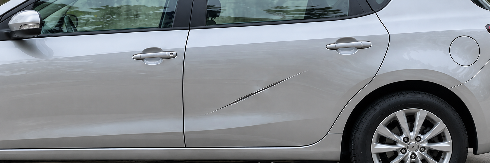

01
六區連續掃描使用者依單一指令完成車外與車內紀錄。AI
手機端即時檢查邊緣運算檢查品質並自動擷取合格影像。AI
雲端前後比對模型對齊影像，辨識疑似車損與整潔異常。04
人工確認與送出人員放行車輛，或透過 API 送出處理請求。
我們把自由拍照改成連續掃描。手機端 AI 先確保影像可用，雲端 AI 再比對前後差異，營運人員只需覆核真正需要處理的案件。

我們把需要即時回應的判斷留在手機端，把較耗資源的前後比對放在雲端，並讓營運人員保留最後決策。
我們以一條清楚的服務路徑串接使用者掃描、AI 判讀與營運處理，讓每個環節的分工與結果一目了然。